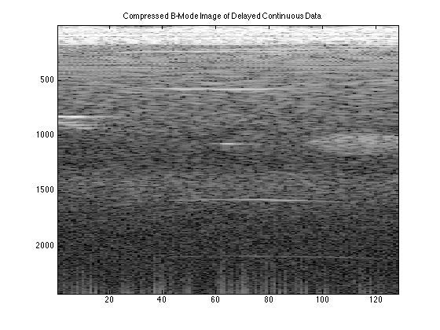

for zz=1:length(pointTarget.data)
zf(zz,1)=(time(zz)*1540)/2;
end
for yy=1:length(zf)
for bb=-63.5:1:63.5
xe_cont(yy,bb+64.5)=((pointTarget.elementSpacingMM)/1000)*bb;
diag_dist_cont(yy,bb+64.5)=sqrt(zf(yy)^2 + (xe_cont(yy,bb+64.5))^2);
time_diag_cont(yy,bb+64.5)=diag_dist_cont(yy,bb+64.5)/1540;
end
for bb=-63.5:1:63.5
time_delay_cont(yy,bb+64.5)=time_diag_cont(yy,bb+64.5)-time_diag_cont(yy,65);
end
end
for dd=1:length(timeArray)
time_withDelays_cont(dd,:)=timeArray2(dd,:)+time_delay_cont(dd,:);
end
for hh=1:128
temp_cont=interp1(time_withDelays_cont(:,hh),squeeze(pointTarget.data(:,hh,:)),timeArray2(:,hh),'linear',0);
reshaped_interp_cont(:,hh,:)=reshape(temp_cont,[2432,1,128]);
end
for jj=1:128
for kk=1:2432
zone_interp_cont(kk,jj)=sum(reshaped_interp_cont(kk,:,jj));
end
end
figure;
imagesc(20*log10(abs(hilbert(zone_interp_cont))),[20,80])
title('Compressed B-Mode Image of Delayed Continuous Data')
colormap('gray')
